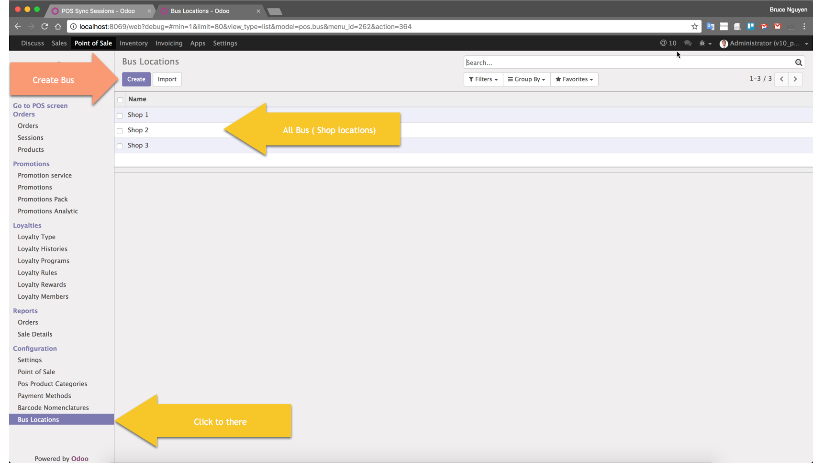
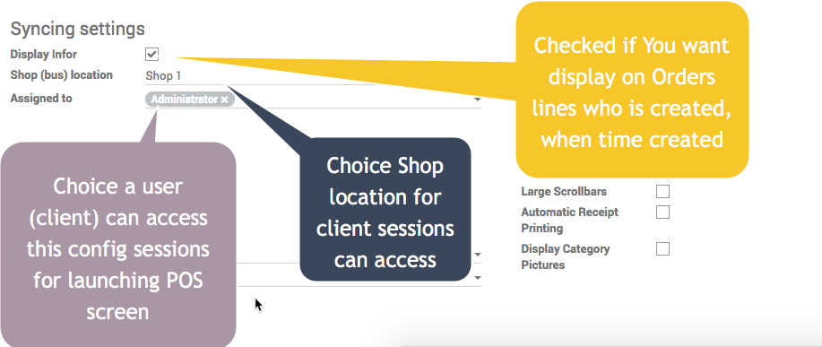
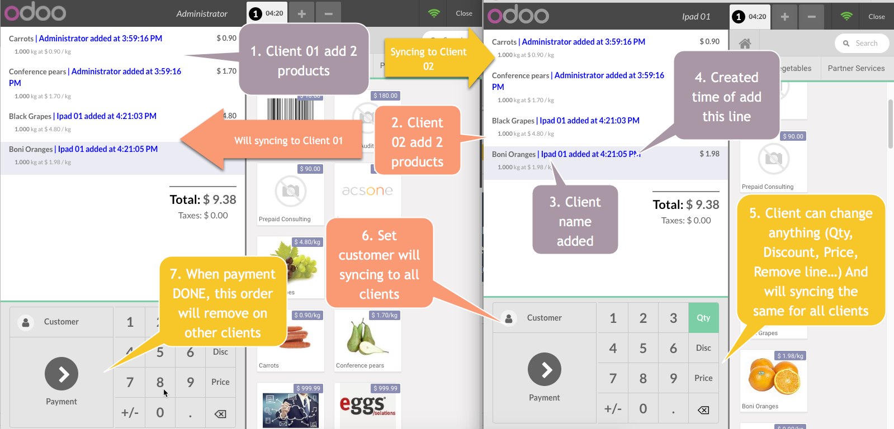
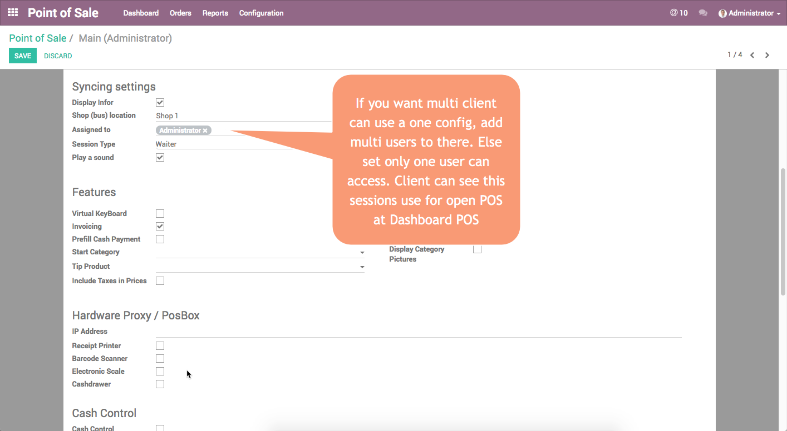

Functions
- We can easily sync orders between sessions (clients like cashiers, waiters ...)
- Your shop will have multi devices and have multi browse use a POS Odoo, and they'll syncing the same ONE SCREEN POS
- Supported work on : Chrome, Firefox, Safari
- There is automatically orders Shop by Shop( one shop can syncing between , and You can have multi shop )
- When your network system have problem (eg: lose the internet), Syncing between clients not work, but Network Up, all transaction automatic syncing again
- All screen of sessions (POS Screen) the same orders, total amount, order lines ...
- When new client open the session of POS screen, this client always have order the same client other ordered before
- When client close browse or turn off the devices (computes), and re-open again, the orders have ordered before will come back (Restore)
- Only support for your shop like market (not support the restaurant/cafe have a kitchen, table, floor), and if need a support for restaurant , you can buy one more module Click here, only 50 EUR
HOW TO CONFIGURATION MODULE AND USE
Create Bus Location, may be you have multi shop and one shop = one location here

Go to POS/Configuration [ Menu ]/ Point of sale / Go layout Syncing Settings

Clients Open Session and add order

Syncing new customer or add customer to order
Setting user can use a pos config

Need our service?
Contact us by email